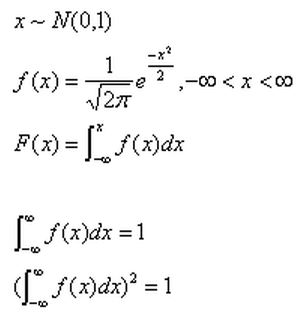
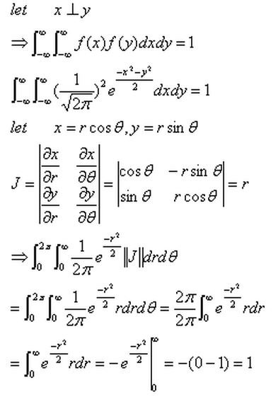
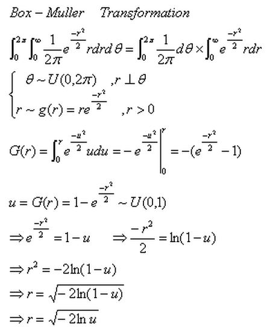
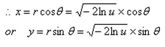

Random variable of normal distribution (作者：Bridan)
發表 亂數產生器 一文後，吸引不少讀者參考，近日發現網友 PeiLingLiu 的部落格 ，分析她的筆記， Box-Muller transform 這方法也不錯。簡單的說， 將兩獨立均勻分佈變數，經變換計算與極座標轉換可產出常態分佈變數 。於 嵌入式系統 ，除非 MCU (Micro Control Unit) 的速度夠快，不然 中央極限定理 的方法， 計算時間較短 。亂數分佈情形，請參考 EXCEL 檔 內容。




(本文來自「研發養成所」 Bridan 的網誌，原文網址為 http://4rdp.blogspot.tw/2008/06/random-variable-of-normal-distribution.html ，由陳鍾誠編輯後刊登於程式人雜誌)